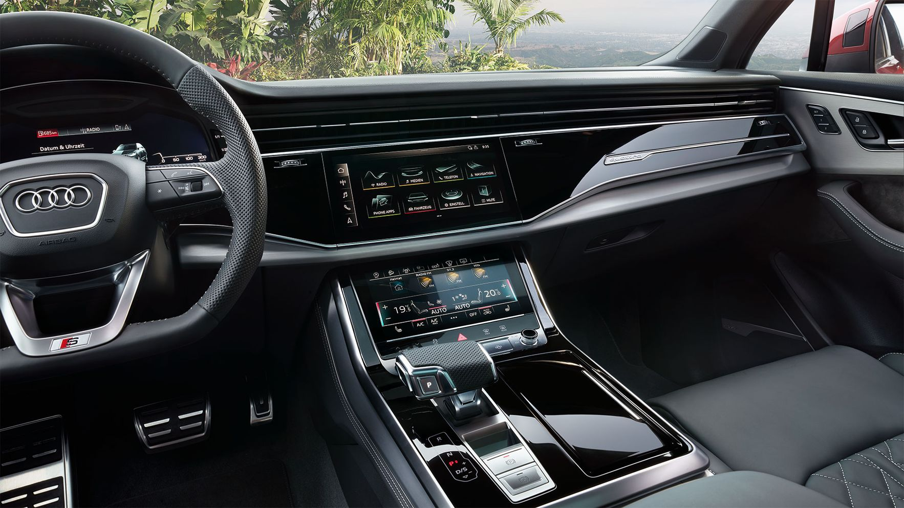
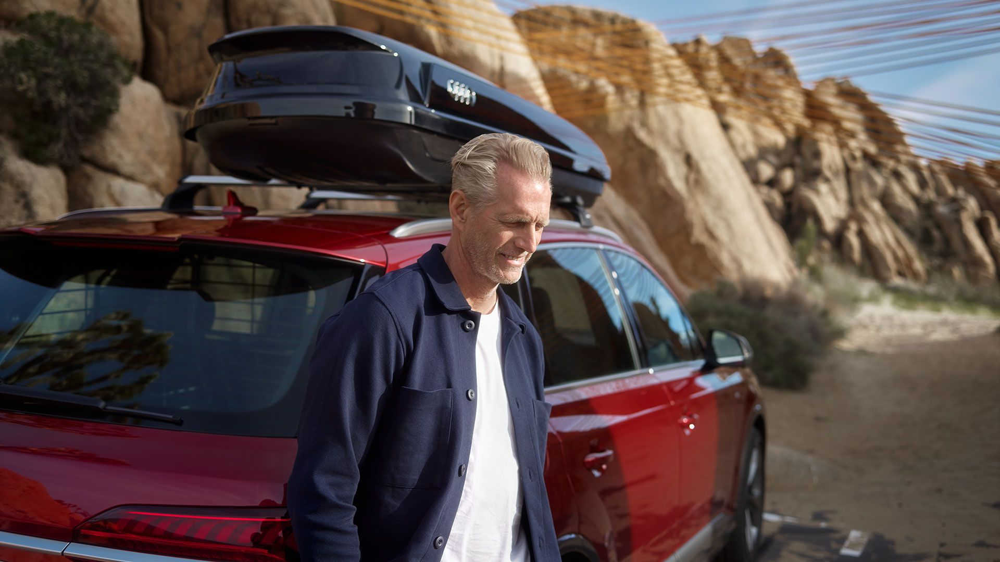

Audi Q7. Создан побеждать.
Новейшие технологии в области информационно-развлекательных систем и систем помощи водителю, убедительный опыт вождения благодаря полному приводу quattro и интеллектуальным решениям подвески, мощный дизайн и просторный салон, который с комфортом размещает до семи человек - это Audi Q7.
Цвета и колесные диски
Создайте свой Q7: в следующей галерее мы покажем три цвета лакокрасочного покрытия и три варианта колес, которые предлагаются для Audi Q7 в качестве опции. На версии в кузове цвета Orca Black установлены 21-дюймовые легкосплавные диски Audi Sport в дизайне 10 спиц Star. Audi Q7 цвета Barrique Brown оборудован 22-дюймовыми легкосплавными дисками Audi Sport в дизайне 5 трапециевидных рукавов. Последняя комбинация представляет собой автомобиль с лакокрасочным покрытием цвета Matador Red и 22-дюймовыми легкосплавными дисками Audi Sport в дизайне 5 рукавов Edge.
Готов к будущему
Инновационные и интуитивно понятные мультимедийные решения позволяют вам продолжать использование цифровых технологий в Audi Q7. Непосредственно перед вами находится цифровая панель приборов Audi virtual cockpit plus. На дисплее высокого разрешения диагональю 12,3 дюйма этой полностью цифровой панели приборов отображается информация об автомобиле, например, значение скорости и частоты вращения двигателя. В дополнение к классическому варианту отображения приборов доступны еще два режима - «Dynamik» и «Sport». Другими функциями можно управлять с помощью предусмотренной в стандартной комплектации медиасистемы MMI Navigation plus с сенсорной панелью MMI touch.
Мощный и спортивный - экстерьер
Audi Q7 убеждает своей динамичной внешностью. Чтобы добавить индивидуальности и подчеркнуть спортивный стиль, вы можете выбрать предлагаемый в качестве опции пакет отделки экстерьера S line. В состав этого пакета входят, в частности, передний и задний бамперы S line, нижняя защитная накладка заднего бампера в подчеркнуто спортивном стиле и 19-дюймовые колесные диски. Интересный контраст предлагает опциональный пакет стилизации Black: он включает в себя цветные акценты в области решетки радиатора Singleframe, декоративное обрамление боковых окон, декоративные вставки боковых дверей, передний и задний бамперы, а также корпуса наружных зеркал заднего вида. Палитра цветов лакокрасочного покрытия включает восемь оттенков, среди них особенно выразительные Navarra Blue и Matador Red.
Ярко освещает
Audi Q7 оснащен светодиодными фарами в стандартной комплектации. Опционально вы также можете выбрать фары с технологиями HD Matrix LED и лазерного освещения. Визуально они подчеркивают мощные габариты Audi Q7. Технически они характеризуются адаптивным распределением света. Технология лазерного освещения увеличивает диапазон светодиодного дальнего света в диапазоне высоких скоростей.
Гибкие возможности перевозки грузов
Ассортимент оригинальных аксессуаров Audi включает дополнительное оборудование, которое облегчит повседневную эксплуатацию. Один из примеров: бокс для лыж и багажа. Он оснащен замком, легко загружается с обеих сторон и в зависимости от версии предлагает более 400 литров дополнительного объема для багажа.
